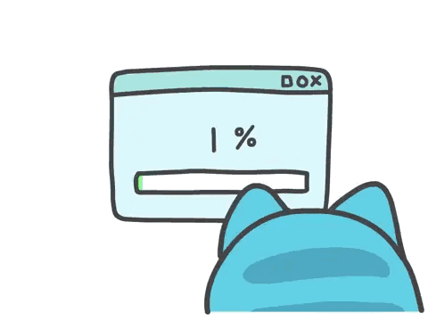

Debian Linux下安装虚拟机软件
VirtualBox
VirtualBox相对来讲安装较为简单，且还是开源免费的，占用系统资源较少
安装最新版本内核头文件/内核镜像
为了避免系统因为"年久失修"内核版本不是最新，我们尽量避免使用网上提供的这种方式
sudo apt-get install linux-headers-`uname -r`
采用以下命令
sudo apt update
sudo apt-cache search linux-image
sudo apt-get install linux-headers-xxx linux-image-xxx
#后面的xxx是上面语句中搜索出来的版本号和系统架构
init 6 #装完重启

apt安装VirtualBox
apt-get install virtualbox virtualbox-guest-additions-iso
VMware Workstation
比起VBox,VMware折腾起来坑真的好多啊= =
不过没办法。。。我还有10多个VMware的虚拟机w(
安装最新版本内核头文件/内核镜像
第一步和安VBox一样的操作
sudo apt update
sudo apt-cache search linux-image
sudo apt-get install linux-headers-xxx linux-image-xxx
#后面的xxx是上面语句中搜索出来的版本号和系统架构
init 6 #装完重启

安装各种编译器
sudo apt-get install build-essential

安装VMware Workstation
去官网下载安装程序
给可执行权限
chmod x VMware-Workstation-Full-版本号.bundle
#TIP:文件名太长可以Tab补全
运行
sudo ./VMware-Workstation-Full-版本号.bundle
安装好之后想要运行直接终端输入vmware就可以了
排坑
如果你顺利的话完成上面几步之后依照提示就可以结束这快乐的安装过程了
但是，，，我还遇到了更多奇奇怪怪的坑
如果各位朋友也遇到了，可以参考下解决方案

VMware在编译和安装vmmom和vmnet两个模块的时候出了问题，查了各种解决方案都没用
最后，我采取了手动编译安装两个模块的方法
暴力出奇迹–永远不变的真理 逃)
以下是具体解决方案，英语好的伙伴们可以参考这个官方论坛帖子捏~~
先下载模块的源码
由于这里
git clone不知道为什么并不能拉取所有源码，所以我们这里选择下载zip包

解压后进入源码目录
unzip vmware-host-modules-workstation-16.2.1.zip
cd vmware-host-modules-workstation-16.2.1
编译+安装
make
sudo make install
模块安装完之后重启vmware服务
sudo systemctl restart vmware

完成之后再运行VMware Workstation,就应该可以正常进入程序了
vmware

激活
网上VMware激活码可谓了一大堆
为了帮大家偷懒 (逃 ，我在下面放上一个目前(2022.5)能用的
ZF3R0-FHED2-M80TY-8QYGC-NPKYF